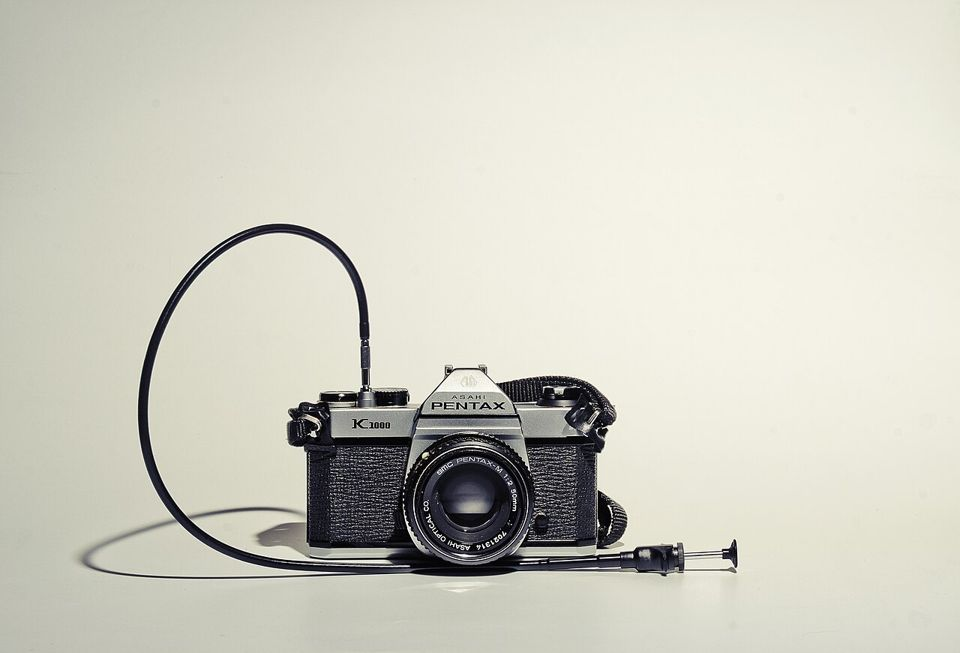
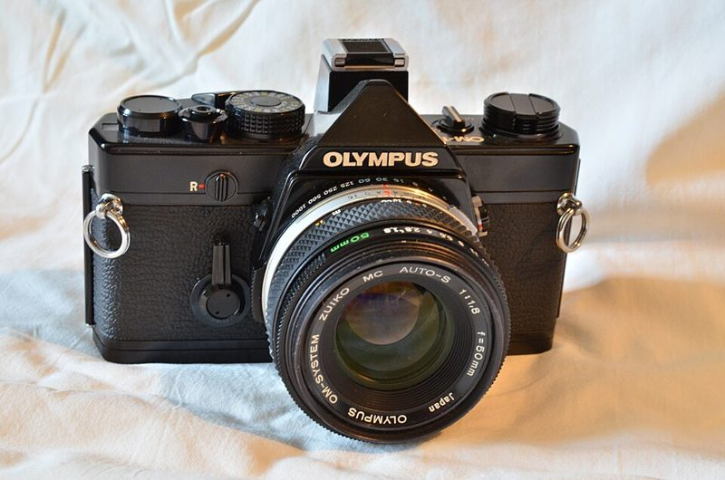
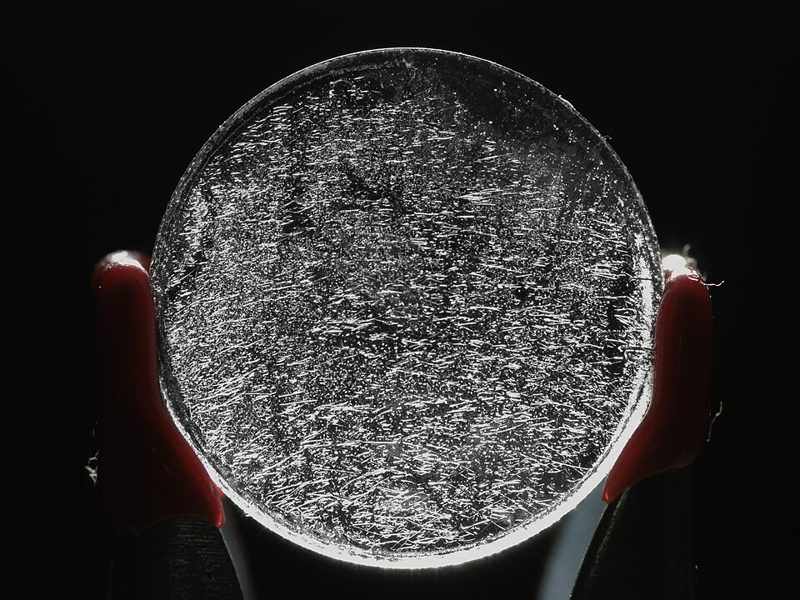

수동 SLR Manual SLR · 135
렌즈로 들어온 상을 거울로 그대로 봅니다. 조리개와 셔터를 직접 정하며 노출을 배우기에 가장 좋습니다.





어떻게 찍히나요
렌즈로 들어온 빛을 거울과 펜타프리즘이 뷰파인더로 보내 줍니다. 그래서 찍힐 화면을 그대로 보며 초점을 맞춥니다. 셔터를 누르면 거울이 올라가고 필름에 빛이 닿습니다. 기계식 기종은 배터리 없이도 셔터가 작동합니다(노출계만 배터리 사용).
이런 분께 추천
- 노출(조리개·셔터·감도)을 제대로 배우고 싶은 분
- 렌즈를 바꿔 가며 찍고 싶은 분
- 오래 쓸 튼튼한 카메라를 원하는 분
좋은 점과 아쉬운 점
- 좋은 점
- 렌즈 교환, 기계식은 튼튼
- 아쉬운 점
- 무겁고 셔터 소리가 큼
대표 기종
Nikon FM2 · Pentax K1000 · Canon AE-1 · Olympus OM-1
대략적인 가격
15만 ~ 60만 원
어울리는 필름
중고로 살 때 확인할 것
- 뒷판을 열고 셔터를 여러 속도로 눌러 소리가 달라지는지
뒷판을 연 모습(Nikon FM2). 셔터 속도를 바꿔 가며 눌러 보고, 빠른 속도일수록 짧게 열리는지 소리와 눈으로 확인합니다. - 렌즈 안 곰팡이·흐림을 손전등으로 비춰 확인

렌즈 곰팡이 — 렌즈 알 표면에 실뿌리처럼 퍼진 균사. 손전등을 렌즈 뒤에서 비추면 이렇게 보입니다. 심하면 코팅이 상해 사진이 뿌옇게 나옵니다. - 노출계 바늘이 밝기에 따라 움직이는지
- 필름실 가장자리 스펀지(차광재)가 끈적하게 삭았는지

차광재(스펀지)가 삭으면 빛이 새어 들어와 사진에 이런 붉은 줄이 생깁니다. 교체 비용은 1~3만 원 선.